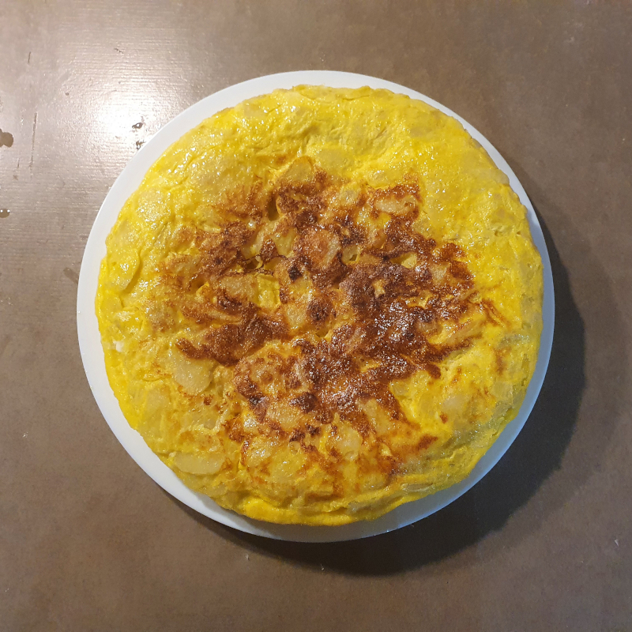
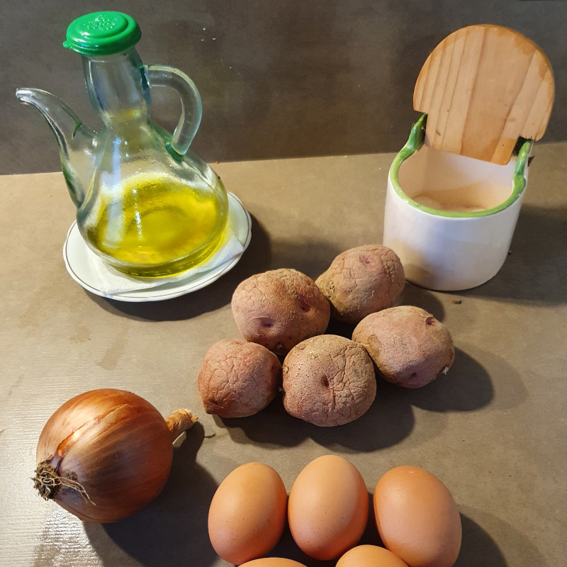
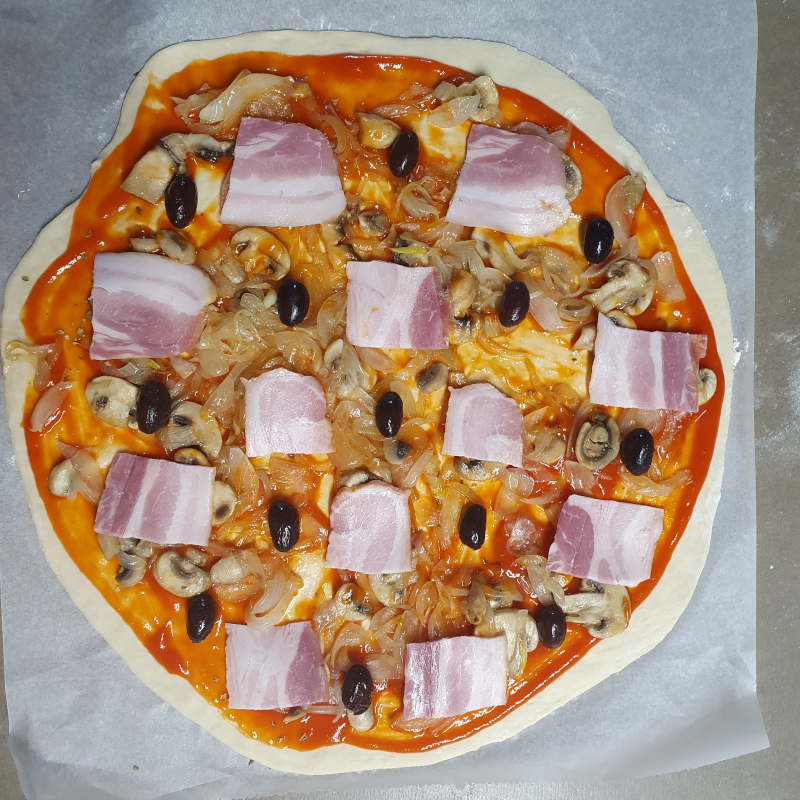
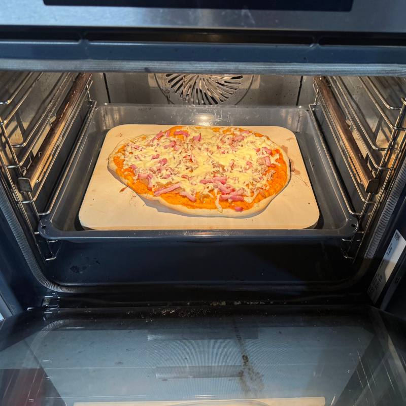

Recepta de truita de patates

Ingredients
- 5 ous
- 5 Patates mitjanes
- Oli
- Sal
- 1 ceba
Instruccions
Pelem les patates i les netegem amb aigua. Un cop netes, les tallem en llesques de gruix mitjà.
Posem a escalfar oli a foc mitjà en una paella; cal que hi hagi prou oli per cobrir totes les patates. Quan l'oli estigui calent, hi afegim les patates i les deixem fregir fins que estiguin toves. Cal remenar de tant en tant perquè no s'enganxin.
Un cop hem posat les patates, tallem la ceba a daus petits i, quan la tinguem tallada, l'afegim a la paella.
Mentre es van fent la patata i la ceba, trenquem els ous i els posem en un bol. Els batem i hi afegim sal al gust.
Quan les patates estiguin toves (es poden punxar bé amb un ganivet), les traiem amb una escumadora o espàtula i les afegim al bol amb l'ou.
Quan tinguem totes les patates dins del bol amb l'ou, retirem l'oli de la paella i hi aboquem la barreja. Esperem uns minuts fins que l'ou hagi quallat i, amb l'ajuda d'un plat, girem la truita. Esperem uns minuts més fins que s'acabi de fer i la retirem del foc.
Si vols que la truita quedi crua cuina la barreja amb foc fort.
Tingues en compte que una truita poc feta te més risc de portar salmonelosis.
Galeria d'imatges
-

-

-

Vídeo
En el següent video del diari Ara podem veure un altra recepta de com preparar una deliciosa truita.